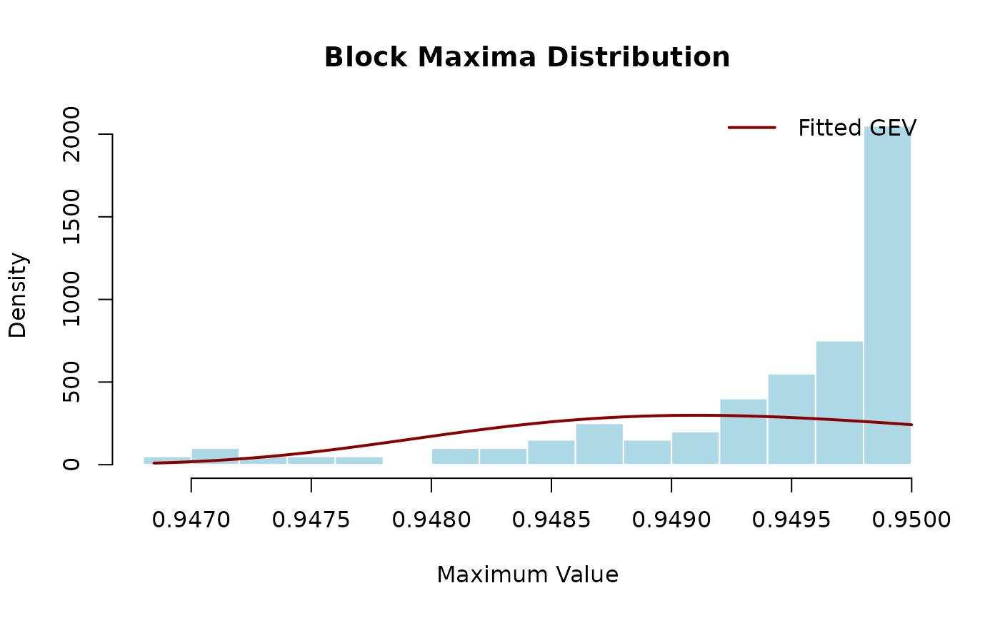

Fits a Generalized Extreme Value (GEV) distribution to block maxima data using maximum likelihood estimation. The GEV distribution is the limiting distribution for block maxima under appropriate conditions.
Arguments
- block_maxima
Numeric vector of block maxima, typically obtained from
block_maxima. Should contain at least 20-30 values for reliable estimation, though more (50+) is preferable. Must not contain NA or infinite values.
Value
A fitted model object with class `chaotic_model` plus the original backend class. The fit backend is: - `evd::fgev()` when `evd` is available - `ismev::gev.fit()` otherwise
Both objects contain: - **Estimated parameters**: location (μ), scale (σ), shape (ξ) - **Standard errors**: asymptotic standard errors for parameters - **Log-likelihood**: maximized log-likelihood value - **Convergence information**: optimization convergence status
Use `summary()` to display parameter estimates and standard errors. Use diagnostic plots from the respective package for model validation.
Details
## Overview The GEV distribution combines three classical extreme value distributions (Gumbel, Fréchet, and Weibull) into a single family. It is parameterized by location (μ), scale (σ > 0), and shape (ξ) parameters.
This function provides a convenient wrapper that uses `evd::fgev()` if the evd package is available, otherwise falls back to `ismev::gev.fit()`. Both implementations use maximum likelihood estimation.
## GEV Distribution The cumulative distribution function is: $$G(z) = \exp\{-(1 + \xi z)^{-1/\xi}\}$$ where z = (x - μ)/σ and the support depends on ξ.
## Shape Parameter Interpretation The shape parameter ξ controls tail behavior: - **ξ > 0**: Fréchet type (heavy tail, power-law decay) - **ξ = 0**: Gumbel type (light tail, exponential decay) - **ξ < 0**: Weibull type (bounded tail, finite upper endpoint)
For chaotic systems, ξ is often close to zero or slightly negative, depending on the system's dynamics and the observable being studied.
## Model Diagnostics After fitting, always check: - Probability plots (Q-Q, P-P) - Return level plots - Confidence intervals for parameters - Likelihood-based diagnostics
Mathematical Background
Fisher-Tippett theorem states that if normalized block maxima converge to a non-degenerate distribution, it must be the GEV. For a sequence \(M_n = \max(X_1, \ldots, X_n)\), there exist sequences \(a_n > 0\) and \(b_n\) such that: $$P((M_n - b_n)/a_n \le z) \to G(z)$$ as n → ∞, where G is the GEV distribution.
References
Jenkinson, A. F. (1955). The frequency distribution of the annual maximum (or minimum) values of meteorological elements. *Quarterly Journal of the Royal Meteorological Society*, 81(348), 158-171. doi:10.1002/qj.49708134804
Coles, S. (2001). *An Introduction to Statistical Modeling of Extreme Values*. Springer. Chapter 3. doi:10.1007/978-1-4471-3675-0
Prescott, P., & Walden, A. T. (1980). Maximum likelihood estimation of the parameters of the generalized extreme-value distribution. *Biometrika*, 67(3), 723-724.
See also
block_maxima for extracting block maxima from time series,
fit_gpd for the alternative POT approach with GPD distribution,
threshold_diagnostics for threshold selection in POT.
For diagnostic plots, see the documentation of `evd::fgev()` or `ismev::gev.fit()` depending on which package you have installed.
Other extreme value functions:
block_maxima()
Examples
# Simulate chaotic time series and extract block maxima
series <- simulate_logistic_map(n = 5000, r = 3.8, x0 = 0.2)
bm <- block_maxima(series, block_size = 100)
# \donttest{
# Fit GEV distribution
if (requireNamespace("evd", quietly = TRUE)) {
gev_fit <- fit_gev(bm)
# Display parameter estimates
print(gev_fit)
summary(gev_fit)
# Extract parameters
params <- gev_fit$estimate # For evd::fgev
cat("Location:", params["loc"], "\n")
cat("Scale:", params["scale"], "\n")
cat("Shape:", params["shape"], "\n")
# Interpretation of shape parameter
if (params["shape"] > 0.1) {
cat("Heavy-tailed distribution (Fréchet)\n")
} else if (params["shape"] < -0.1) {
cat("Bounded distribution (Weibull)\n")
} else {
cat("Exponential-tailed distribution (Gumbel)\n")
}
}
#> <chaotic_model>
#> Model: gev
#> Method: evd::fgev
#> Parameters:
#> loc scale shape
#> 0.949091 0.001247 0.000000
#> Location: 0.9490907
#> Scale: 0.001247085
#> Shape: -5.356548e-10
#> Exponential-tailed distribution (Gumbel)
# }
# Compare GEV fit to empirical distribution
bm2 <- block_maxima(simulate_logistic_map(10000, 3.8, 0.2), 100)
hist(bm2, breaks = 20, probability = TRUE, col = "lightblue",
border = "white", main = "Block Maxima Distribution",
xlab = "Maximum Value")
# \donttest{
# Overlay fitted GEV density
if (requireNamespace("evd", quietly = TRUE)) {
fit2 <- fit_gev(bm2)
x_seq <- seq(min(bm2), max(bm2), length.out = 200)
lines(x_seq, evd::dgev(x_seq, loc = fit2$estimate["loc"],
scale = fit2$estimate["scale"],
shape = fit2$estimate["shape"]),
col = "darkred", lwd = 2)
legend("topright", legend = "Fitted GEV", col = "darkred",
lwd = 2, bty = "n")
}

# }